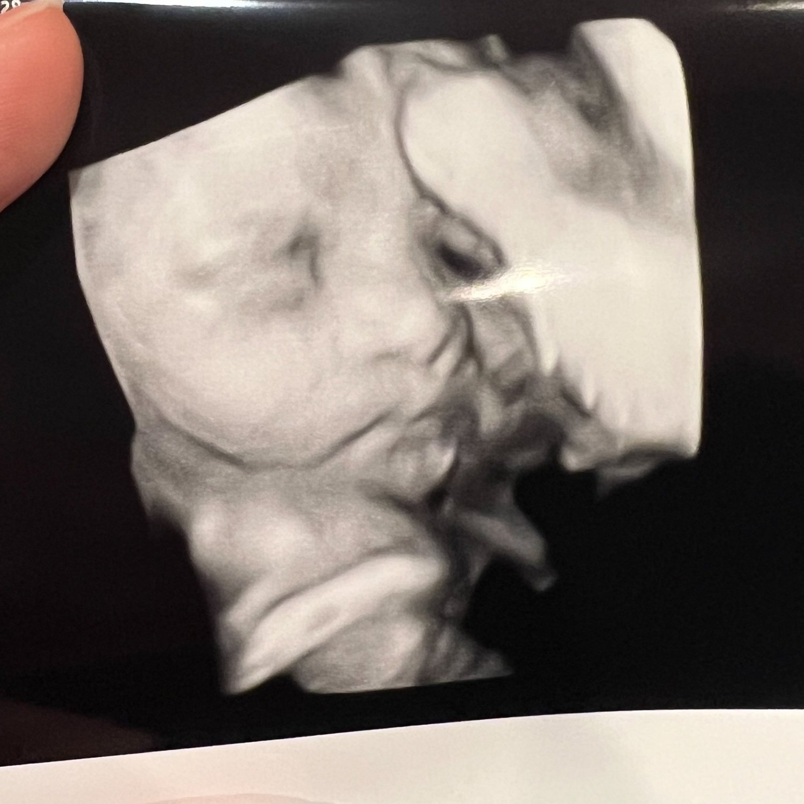

Second Trimester Recap
Here we are!! I’m officially 29 weeks pregnant and I can’t believe how fast the second trimester flew by! I have to say- it definitely is the best trimester of the three, so it’s no wonder it went by so fast.
Honestly the second trimester was a dream. Way better than the first trimester (although the first trimester had some perks too). I started feeling the TINIEST baby flutters at 12.5 weeks, but they really became pronounced by week 16. That was when things got so exciting for me - feeling baby move every day has been so amazing.
I had a 2-week bout of headaches around weeks 13-15, but they never came back after that.
At week 20 we found out the gender, and we are having a baby boy! We already know his name, too. Weeks 18-20 is also around the time that the baby bump became really pronounced, which I find to be so fun for me. We had a gender reveal party, which filled me with so much love and encouragement.
I sleep so hard every night, which I have NEVER been able to do. I wake up feeling so refreshed after 9-10 hours of sleep. My skin has been soo clear this entire pregnancy, too.
Around week 20 I also started to get really hungry all the time. Like if I don’t eat within 30 minutes I feel sick and get a headache to where food doesn’t help. So I started eating more frequently throughout the day to satiate that hunger that I’m not used to.
Weeks 23-27 I started focusing on preparing the nursery and getting a little stressed about what to expect for the third trimester because my stamina is slowly decreasing. I don’t have swelling yet but I definitely need to kick back at night and raise my feet up to feel better. I’ve started to worry about having everything ready for birth. I need to have everything prepared for the home birth as well as a hospital bag just incase of needing to transfer there.
In general though, I’ve felt so good throughout the second trimester and I feel sooo lucky for my experience so far. Baby boy is already head down starting at week 25 and has stayed there ever since. I felt his first hiccups at 27w2d, which was very cute to feel.
I’m a little anxious about how tired or achy I’m going to get by the end of this, but I’m just trying to stay active and maintain my routine. I walk the dogs every day for 30 minutes and I also try to do yoga and stretches as many days of the week as I can to help me feel better - which usually ends up being about 5 days a week. Hope things stay looking up like they have been!
I guess my next post will be a third trimester recap and/or baby delivery blog! Until then-
Sweet regards,
Kim
